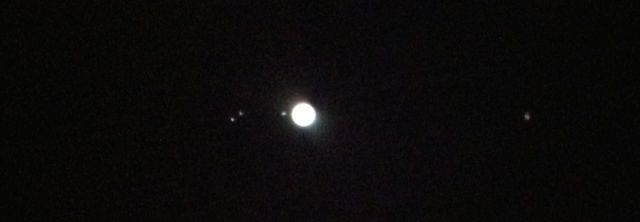
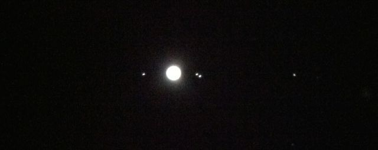

|
|
|---|
|
This is a series of images I took of Jupiter with my Celestron NexStar 8se by holding my iPhone up to the lens (still working on getting the NexImage 5 to work on a iMac running VMWare). This is also through my star diagonal so it is still mirrored left-right, that is to say I did not filp it from what I saw when I took it. It looks a lot better to the eye. I can easily make out the stripes in the clouds of Jupiter, but not the red spot. I used Solar Walk to work out the order of the moons. This is my updated version of the drawings Galileo made when he was the first human to see there where moons orbiting other bodies in the solar system. The orbital period of the moons are: |
|
2014 March 15, 20:26 PDT, RA: 06h 47m 32.8s, Dec: +23° 08’ 02” Calisto, Jupiter, Io, Europa, Ganymede |
|
2014 March 16, 20:27 PDT, RA: 06h 45m 05.5s, Dec: +23° 30’ 09” Calisto, Ganymede, Io, Jupiter, Europa  |